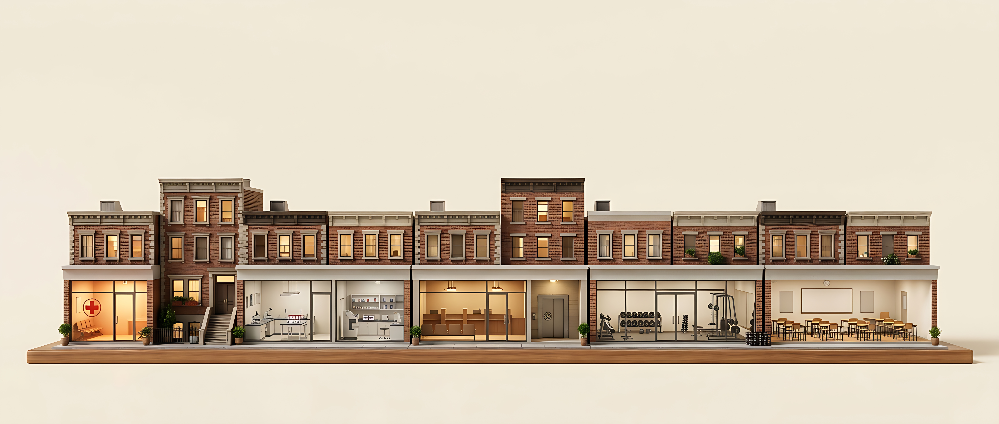
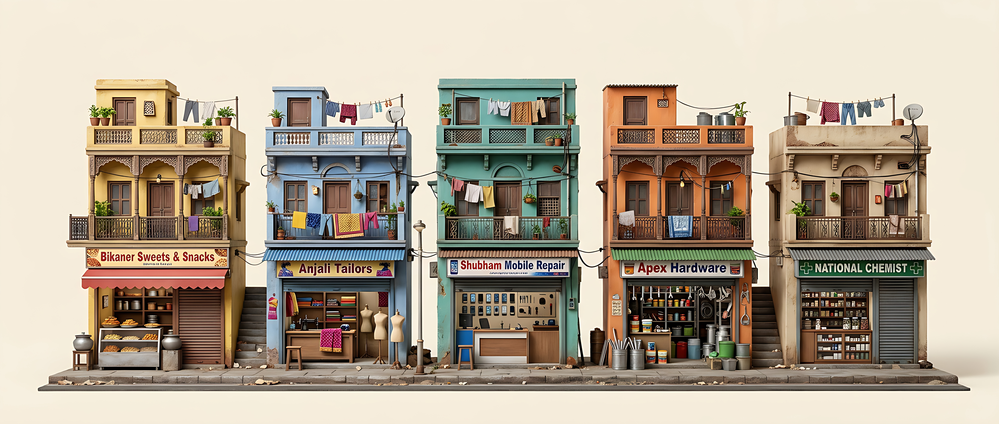
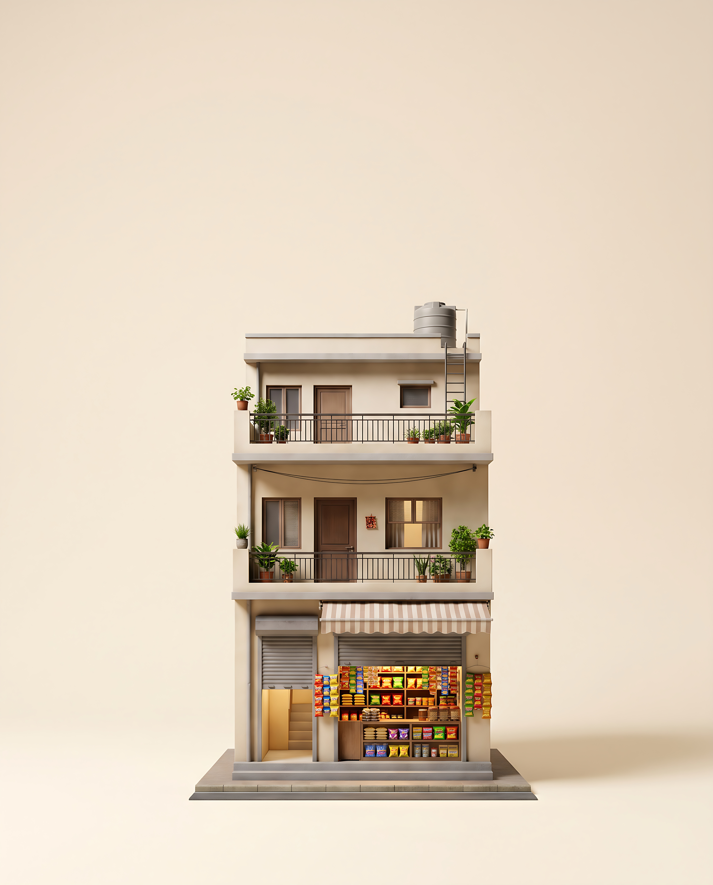

2006
2007



Why India looks like this #3
shop
downstairs.
family
upstairs.
downstairs.
family
upstairs.
Every Indian street has it.
Why?
Why?
Swipe →
in 2006, delhi
made it legal on
made it legal on
2,183
roads.
in one go.
in one go.
Swipe: how a habit
became a rule.
became a rule.
01 · The habit
first came the habit.
A shutter below, the family above. On many Delhi streets it ran for years without a clear rule.
02 · The fear
then came sealing.
Shops run from homes could be sealed. Traders lived under what the papers called a "Damocles' sword".
03 · 15 Sep 2006
2,183 roads.
Delhi notified mixed land use: a home and a small shop on the same plot, on listed roads.
April 2007: 355 more roads.
04 · 7 Feb 2007
the master plan.
MPD 2021 allowed daily-needs shops, about ten kinds of professionals, clinics, labs, banks, gyms and coaching centres in residential areas.
05 · Today
not an accident.
on listed roads,
it is the plan.
on listed roads,
it is the plan.
Send it to a friend who lives above a shop
Follow for #4 tonight: why Mumbai towers have an empty floor.